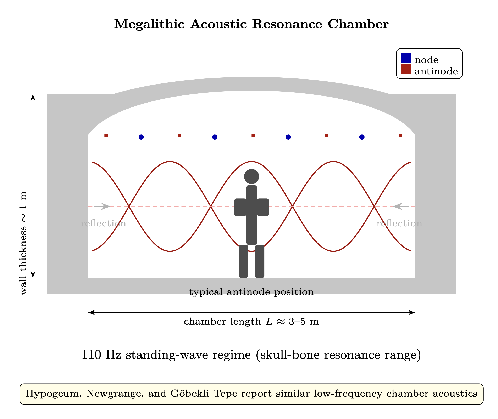

Chapter 11: Seeder Intervention and Megalithic Infrastructure
The Corporate Feed Network, Inner Earth Preservation, and Planetary Resonant Systems
KEY FINDINGS — Chapter 11: Seeder Intervention and Megalithic Infrastructure
Evidence-tier key: [L1] established/replicated evidence; [L2] grounded extension with moderate uncertainty; [L3] speculative hypothesis; [L4] conceptual/anecdotal.
- Direct 6D-to-3D power injection fails due to impedance mismatch (\(\Gamma \approx 0.984\), >96% reflection); staged intermediaries are physically necessary [L1-L2: derived from standard RF impedance theory]
- Human-specific genomic anomalies (2,700 HARs mutating at 26x rate, ARHGAP11B single-nucleotide brain expansion, 930 Kya bottleneck) are consistent with directed modification [L1-High: Peer-reviewed genetics papers]
- Megalithic sites show systematic piezoelectric material selection, acoustic resonance at 95-120 Hz, and sub-degree astronomical alignment — consistent with engineered resonant infrastructure [L2-Medium/L3-Speculative: mix of peer-reviewed measurements and contested interpretations]
- The Adamic lineage model predicts dual impedance-transformer and local-oscillator function, matching cross-cultural “gods” traditions [L3: theoretical framework applied to mixed-evidence sources]
- Inner earth traditions across 10+ unconnected cultures encode a consistent pattern of preserved higher-density lineages [L3-Speculative: mythological and testimonial evidence]
_________________________________
11.1 The Acceleration Problem: Why Natural Evolution Is Too Slow
11.1.1 Soul Evolution as Coherent Integration
Chapter 3 (Section 5) established that soul evolution proceeds through SAR-like coherent integration across lifetimes. Each lifetime provides a single “aperture” observation of reality; coherent integration across many lives builds a synthetic aperture that resolves increasingly complex templates: \[ A_{soul}(t) = \int _0^t \eta _{coherence}(\tau ) \cdot dA(\tau ) \] Where \(\eta _{coherence}\) is the coherence factor between successive incarnations (0 for random or traumatic, 1 for fully integrated). This factor determines whether lives build constructively—like a synthetic aperture radar accumulating signal—or scatter randomly like noise.
The resolution of the synthetic aperture depends on how many lives combine coherently: \[ D_{synthetic} = \sum _{i=1}^{N} D_i \cdot e^{j\phi _i} \] Two regimes emerge:
- Coherent addition (aligned phases): \(|D_{synthetic}| = N \cdot D_{single}\)
- Random-phase addition (unaligned): \(|D_{synthetic}| = \sqrt {N} \cdot D_{single}\)
The difference is dramatic. After 100 incarnations: coherent addition yields 100\(\times \) gain; random addition yields only 10\(\times \). After 10,000 incarnations: coherent yields 10,000\(\times \); random yields only 100\(\times \). The gap grows without bound.
11.1.2 The Random-Phase Bottleneck
Under natural conditions—without external reference—each incarnation begins with whatever phase relationship emerges from the previous life’s unresolved karma:
- Karma = phase disruption: Accumulated phase error between lives. Negative karma introduces phase offsets requiring correction before coherent addition can resume.
- Dharma = optimal trajectory: The path that maximizes coherent gain across lifetimes.
- Without external reference: Phase correction is trial and error. Each soul must independently discover alignment, with no stable reference to lock onto.
This is the receiver problem: a radio without a local oscillator can detect that a signal exists but cannot demodulate it coherently. The information is there; the mechanism to extract it efficiently is not.
The timeline problem: The density transition from 3rd to 4th requires sufficient template resolution (\(R_{template}\)) to access and instantiate 4th-density patterns. At \(\sqrt {N}\) scaling, this requires orders of magnitude more incarnations than coherent addition would demand. Natural timeline: billions of years for density transitions without an external phase reference.
The bottleneck: Without a stable reference signal, souls drift randomly in phase space between incarnations. Each life may add valuable experience, but the accumulated experiences fail to combine constructively. The information content of the Source broadcast (Chapter 1) is fully available, but the demodulation efficiency is catastrophically low.
_________________________________
11.2 The Power Level Problem: Why Direct 6D-3D Injection Fails
11.2.1 The Impedance Cascade
Even if a higher-density civilization wanted to directly inject guidance into 3rd-density consciousness, the physics forbids efficient coupling across large density gaps.
Chapter 2 (Section 2.4) established the impedance cascade: \[ Z_{density}(d) = Z_1 \cdot \beta _{cascade}^{(d-1)} \] With \(\beta _{cascade} \approx 5\), the impedance at each density relative to the 3rd-density baseline \(Z_3 = 25 Z_1\):
| Density | Impedance | Relative to \(Z_3\) |
| 3rd (\(Z_3\)) | \(25 Z_1\) | \(Z_3\) (baseline) |
| 4th (\(Z_4\)) | \(125 Z_1\) | \(\approx 5 Z_3\) |
| 5th (\(Z_5\)) | \(625 Z_1\) | \(\approx 25 Z_3\) |
| 6th (\(Z_6\)) | \(3{,}125 Z_1\) | \(\approx 125 Z_3\) |
The voltage reflection coefficient for a signal crossing from source density to 3D: \[ \Gamma = \frac {Z_{source} - Z_3}{Z_{source} + Z_3} \] And power transmitted: \(\tau = 1 - |\Gamma |^2\).
|
Source Density | Relative \(Z\) | \(\Gamma \) (voltage) | Power Transmitted |
|
6th | \(125 Z_3\) | \(124/126 \approx 0.984\) | \(\approx 3.2\%\) |
|
5th | \(25 Z_3\) | \(24/26 \approx 0.923\) | \(\approx 14.8\%\) |
|
4th | \(5 Z_3\) | \(4/6 \approx 0.667\) | \(\approx 55.6\%\) |
A 6th-density seeder attempting direct injection into 3D faces a voltage reflection of 0.984—over 96% of the power reflects back. Only ~3.2% gets through the impedance mismatch alone.
11.2.2 Why Intermediaries May Be Physically Required (Model-Conditional)
Chapter 2 (Section 2.8) adds a second attenuation mechanism—dimensional resistance: \[ R_d = R_0 \cdot e^{\alpha |d_{target} - d_{current}|} \] With \(\alpha \approx 0.5\)–\(1.0\) per density. The total power transfer across a density boundary (Chapter 2, Section 2.8.3): \[ P_{transferred} = P_{source} \cdot (1 - |\Gamma |^2) \cdot e^{-R_d / Z_{source}} \] For 6D\(\rightarrow \)3D (\(|d| = 3\)): the impedance mismatch passes only ~3.2%, and exponential dimensional resistance (\(e^{-1.5}\) to \(e^{-3.0}\)) attenuates even that residual. Direct 6D\(\rightarrow \)3D injection is negligible.
For 4D\(\rightarrow \)3D (\(|d| = 1\)): the impedance mismatch passes ~55.6%, and dimensional resistance is modest (\(e^{-0.5}\) to \(e^{-1.0}\), i.e., 37–61% throughput). Combined: 20–34% of source power reaches the receiver. This is workable.
Conclusion (conditional): If the impedance ladder and dimensional-resistance model are valid as specified, intermediaries operating at 4th–5th density become a practical requirement rather than a design preference. Under these assumptions, direct 6D\(\rightarrow \)3D injection is strongly attenuated, and a staged transformer path (6D \(\rightarrow \) 5D \(\rightarrow \) 4D-5D Adamic \(\rightarrow \) 3D) is the more plausible transfer architecture.
_________________________________
11.3 The Corporate Feed Solution
11.3.1 The Engineering Response
Given the constraints of Sections 11.1–11.2—natural evolution too slow, direct injection highly attenuated—the model proposes a hierarchical solution: a corporate feed network that distributes power through staged impedance transformation.
A corporate feed network in antenna engineering distributes power from a central source through a hierarchical tree of transmission lines, transformers, and dividers. Unlike the natural cosmic cascade, it is deliberately engineered infrastructure for specific power distribution goals.
Within the model, seeders are hypothesized to have installed additional infrastructure beyond the natural cosmic cascade:
- Direct power links bypassing natural attenuation
- Engineered intermediary lineages for targeted impedance matching
- Accelerated development timelines
- Specific genetic/consciousness modifications
- Planetary resonant infrastructure (megalithic sites)
11.3.2 Corporate Feed Power Distribution
Power at each array element from a corporate feed: \[ P_{output} = P_{source} \cdot \prod _{i=1}^{n} T_i \cdot e^{-\alpha _i d_i} \] Where:
| Variable | Description |
| \(T_i\) | Transformer/divider ratio at tier \(i\) |
| \(\alpha _i\) | Loss coefficient at tier \(i\) |
| \(d_i\) | Propagation distance through tier \(i\) |
11.3.3 Density-Consciousness Mapping
| Tier | RF Function | Consciousness Mapping | Density |
| 0 | Source oscillator | Infinite Creator | 8th+ |
| 1 | Primary transformer | Seeder civilizations | 6th-7th |
| 2 | Secondary distribution | Coordinator groups | 5th-6th |
| 3 | Tertiary matching | Hybrid lineages (Adamic) | 4th-5th |
| 4 | Element feed | Human baseline | 3rd |
Each tier crosses only one density boundary—maximizing power transfer at each step, as Section 11.2 demonstrated is necessary. The architecture mirrors standard RF engineering: impedance-matched stages in cascade always outperform a single large impedance jump (see Chapter 8 for the phased array framework).
_________________________________
11.4 The Adamic Lineage: Dual Function Design
The seeder intervention created a specially engineered human lineage—the Adamic line—designed to solve both the acceleration problem (Section 11.1) and the power-level problem (Section 11.2) simultaneously. This lineage serves two distinct and complementary functions: impedance transformation and local oscillator reference.
11.4.1 Impedance Transformation
The Adamic lineage operates at characteristic impedance \(Z_{Adamic} \approx 5\)–\(25 \cdot Z_3\) (4th to 5th density equivalent): \[ Z_{Adamic} \approx Z_4 \text { to } Z_5 = 5Z_3 \text { to } 25Z_3 \] This places them in the optimal impedance range for coupling between seeder civilizations (6th density, \(Z_6 = 125 Z_3\)) and baseline humanity (3rd density, \(Z_3\)):
- Upward coupling (Adamic \(\rightarrow \) 6D): \(\Gamma \approx 0.83\)–\(0.93\), power through ~14–31%
- Downward coupling (Adamic \(\rightarrow \) 3D): \(\Gamma \approx 0.67\)–\(0.92\), power through ~15–56%
Compare with direct 6D\(\rightarrow \)3D: only ~3.2% power through.
The Adamic line functions as a quarter-wave transformer—a section of intermediate impedance that maximizes power transfer between mismatched source and load. In RF engineering, the optimal transformer impedance is: \[ Z_{match} = \sqrt {Z_{source} \cdot Z_{load}} = \sqrt {125 Z_3 \cdot Z_3} = \sqrt {125} \cdot Z_3 \approx 11.2 Z_3 \] This falls squarely within the Adamic operating range of 5–25 \(Z_3\), confirming the engineering optimality of the design.
11.4.2 Local Oscillator Function
Impedance matching solves the power problem but not the direction problem. A well-matched antenna receives power efficiently but doesn’t determine what to do with it. The second Adamic function—local oscillator (LO)—provides the phase reference that transforms random soul evolution into coherent evolution.
The injection locking dynamics from Chapter 9:
Adler equation: \[ \frac {d\phi }{dt} = \Delta \omega - \frac {\omega _0}{2Q} \cdot \frac {V_{inj}}{V_0} \cdot \sin (\phi ) \] PLL equation: \[ \frac {d\phi }{dt} = \omega _{free} + K_d \cdot V_{control} \] Component mapping:
| RF Component | Consciousness Mapping |
| VCO (voltage-controlled oscillator) | Regular human consciousness |
| Local oscillator (LO) | Adamic reference signal |
| Phase detector | Resonance recognition in humans |
| Loop filter | Karmic integration |
| Locked state | Coherent evolution toward Source |
When a regular human’s consciousness (VCO) phase-locks to the Adamic reference (LO), evolution becomes coherent. Instead of random-phase incarnation (\(\sqrt {N}\) gain), each life builds on the previous with preserved phase (\(N\) gain).
The LO does not control the VCO’s frequency—it provides a reference that the VCO can lock to voluntarily, consistent with free will. Chapter 9 established that \(Q\) (sovereignty) determines whether an oscillator locks to an external signal: high-\(Q\) individuals can resist injection locking. The system respects free will by design—the reference is available but not compulsory.
11.4.3 Why Both Functions Are Required
Neither function alone is sufficient:
|
Function | Alone | Combined |
|
Impedance match only | Power delivered but directionless; accelerates evolution randomly | Power delivered AND directed; coherent acceleration |
|
LO reference only | Direction provided but insufficient power to act on it; information without energy | Direction AND power; actionable coherent signal |
This is precisely why the seeder intervention required a biological lineage rather than just a broadcast. A pure broadcast from 6D fails on impedance grounds (Section 11.2). A pure phase reference without power coupling provides information without the energy to implement it. The Adamic lineage, operating at intermediate impedance with both transformer and LO functions, delivers power AND direction simultaneously.
Engineering rationale: A phased array with ALL elements at the same frequency cannot steer. Having one reference frequency (Adamic LO) allows the array to lock and steer coherently.
11.4.4 Cross-Traditional Evidence
The dual-lineage pattern appears across independent traditions:
|
Tradition | Regular Humanity | Special Lineage | Function Described |
|
Genesis | Humans | Sons of God / Nephilim | Divine intermediaries |
|
Sumerian | Created workers | Anunnaki offspring | Civilization bringers |
|
Law of One | Baseline humanity | Genetically modified elite | Spiritual catalyst |
|
Vedic | Regular humans | Rishis / Avatar lineages | Divine conduit |
The consistency across unconnected traditions—each describing two distinct human types with the “special” lineage serving as intermediary between humanity and higher powers—is precisely what the dual-function model predicts. The traditions encode the engineering: intermediaries matched to bridge the impedance gap.
_________________________________
11.5 Artificial SAR: Accelerating Soul Evolution
With the acceleration problem (Section 11.1), the power-level constraints (Section 11.2), and the dual-function Adamic solution (Section 11.4) established, the acceleration mechanism can now be quantified by connecting directly to the SAR framework of Chapter 3.
11.5.1 Natural vs. Artificial SAR
Chapter 3 (Section 5) established two integration modes:
Natural SAR (no external reference): \[ \left |D_{synthetic}\right | = \sqrt {N} \cdot D_{single} \] Each incarnation adds with random phase. Template resolution grows as the square root of lifetimes—slow, undirected, requiring enormous numbers of incarnations for density transition.
Corporate Feed SAR (Adamic LO reference): \[ \left |D_{synthetic}\right | = N \cdot D_{single} \] The Adamic LO provides phase coherence between incarnations. Each life builds constructively on the previous. Template resolution grows linearly with lifetimes—directed, efficient, dramatically faster.
Chapter 4, Section 4.10 proposes that Earth’s low-Q environment was a deliberate engineering choice—the seeders designed not just consciousness acceleration, but Q-hardened consciousness specifically resistant to synthetic capture. The forge’s difficulty is the point: only a low-Q environment produces souls whose high Q has been stress-tested against maximal headwinds.
11.5.2 The Acceleration Factor
The acceleration factor \(\eta _{LO}\) quantifies how much faster evolution proceeds with the Adamic phase reference: \[ \frac {dA_{soul,artificial}}{dt} = \eta _{LO} \cdot \frac {dA_{soul,natural}}{dt} \] For \(N\) coherently integrated lifetimes, the ratio of coherent to incoherent aperture gain is: \[ \eta _{LO} = \frac {N}{\sqrt {N}} = \sqrt {N} \] For \(N = 25\)–\(100\) coherent lifetimes: \(\eta _{LO} \approx 5\)–\(10\times \).
The corporate feed system compresses timelines that would naturally require billions of years into millions—or less. The soul growth equation from Chapter 3: \[ A_{soul}(t) = \int _0^t \eta _{coherence}(\tau ) \cdot dA(\tau ) \] With the Adamic LO, \(\eta _{coherence}\) shifts from near zero (random) to near unity (phase-locked), transforming the integral’s convergence rate.
11.5.3 Connection to Template Demodulation
Chapter 3 established that standing wave demodulation requires a cavity structure to extract templates from the broadband Source signal. The megalithic infrastructure (Section 11.9) provides this cavity structure at the planetary scale—the physical hardware of the corporate feed.
The Adamic LO provides the reference signal for demodulation. Without it, the broadband Source signal contains all information but cannot be coherently extracted at 3D. With it, specific templates are demodulated into accessible form, just as a superheterodyne receiver (Section 11.7) uses a local oscillator to convert RF to baseband.
11.5.4 Connection to Resonant Growth
Chapter 4 established the positive feedback loop: reception \(\rightarrow \) accumulation \(\rightarrow \) condensation \(\rightarrow \) expansion \(\rightarrow \) frequency shift \(\rightarrow \) more power access \(\rightarrow \) more growth. The corporate feed SAR mechanism amplifies this loop:
- Coherent soul evolution \(\rightarrow \) better impedance matching \(\rightarrow \) more Source signal received
- More signal \(\rightarrow \) faster template resolution \(\rightarrow \) faster density transition
- The acceleration is self-reinforcing: the Adamic LO bootstraps a positive feedback cycle
This explains why seeder intervention is a one-time investment with compounding returns. Once coherent evolution begins, the resonant growth mechanism (Chapter 4) sustains and accelerates it.
_________________________________
11.6 Evidence: What the RF Framework Predicts
The corporate feed model (Sections 11.1–11.5) makes specific predictions about what seeder intervention should look like in the historical and archaeological record. This section presents evidence framed as predictions of the framework—not as claims requiring acceptance, but as patterns the model would expect.
11.6.1 The Giants Prediction
Prediction: If the Adamic lineage operates at higher characteristic impedance (\(Z_0 > Z_{3D}\)), and if body size correlates with resonant cavity volume (Chapter 4, Section 4.9), then higher-\(Z_0\) beings should be physically larger than baseline humans. The model predicts giant humanoids as intermediaries.
Cross-cultural evidence:
- Biblical Nephilim: “The Nephilim were on the earth… mighty men of old, men of renown” (Genesis 6:4). Described as offspring of divine beings and human women—precisely the hybrid impedance-matching lineage.
- Sumerian Anunnaki: Depicted as physically towering over normal humans in relief carvings. “Those who from heaven came down”—higher-density beings coupling to 3D.
- Greek Titans: Enormous beings who preceded the current age of humanity. Overthrown in a war of the gods—consistent with a Fall narrative (Chapter 12).
- Norse Jotun: Giants predating the current world order, with whom the gods both fought and interbred.
Physical evidence (contested):
- Giant skeleton reports: Numerous 19th-20th century newspaper accounts of 7–12 ft skeletons excavated across the Americas. Most lack surviving physical specimens; some are documented hoaxes. The pattern of reports, however, is unusually consistent.
- Elongated skulls: Paracas (Peru) and Malta specimens show cranial volumes 25–40% larger than normal, with suture patterns inconsistent with artificial cranial deformation. DNA analysis of Paracas specimens (2014, 2018) showed haplogroups not found in any known population.
Epistemic Note: Giant skeleton claims are among the most contested topics in alternative archaeology. The prediction here is that IF the RF model is correct, THEN such specimens should exist. Their existence (or verified absence) constitutes a test of the model.
11.6.2 Evidence-Lane Rebalance (Core vs Annex)
Detailed low-tier narrative material from Sections 11.6.2-11.6.8 is provided in Annex: Chapter 11 Speculative/Testimonial Catalog.
|
Evidence Block | Tier | Current Role |
|
Megalithic engineering and measured site anomalies | L1-L2 | Doctrine core evidence |
|
Genomic anomaly clustering and intervention-compatible patterns | L1-L3 | Conditional core (with alternative hypotheses retained) |
|
Testimonial/channeled convergence claims | L5 | Annex-only hypothesis layer |
|
Inner-earth and contact-narrative specifics | L4-L5 | Annex-only scenario layer |
|
Out-of-place cartographic artifacts with disputed provenance | L3-L4 | Annex-only contested evidence |
11.6.3 Doctrine Core Claim Set
The chapter core now commits only to the following bounded claims:
- 1.
- Some ancient infrastructure exhibits measurable engineering anomalies requiring deeper technical scrutiny.
- 2.
- Cross-domain anomaly clusters (archaeology, geophysics, genetics) justify structured hypothesis testing.
- 3.
- Testimonial-heavy claims are retained strictly as scenario intelligence, not as primary proof.
11.6.4 Verification Gate
A claim is promoted from annex to doctrine core only if all are true:
- independent replication exists,
- provenance is traceable,
- and at least one competing naturalistic explanation is quantitatively outperformed.
_________________________________
11.7 The Superheterodyne Model
Section 11.4 established the Adamic lineage’s dual function as impedance transformer and local oscillator. The superheterodyne receiver architecture provides the detailed signal-processing framework for how these functions integrate into a complete system.
11.7.1 The Architecture
Source Signal (RF) \(\rightarrow \) [Mixer] \(\rightarrow \) IF Stage \(\rightarrow \) [Detector] \(\rightarrow \) Output \(\uparrow \) Adamic Line (LO)
Components mapped:
- RF Input Source/Infinite Creator signal
- Local Oscillator (LO) Adamic intermediary lineages
- Mixer Point of density interface
- IF Stage Processing infrastructure (including megalithic sites)
- Detector Human consciousness
- Baseband Output Manifested experience
11.7.2 LO Function: Reference and Guidance
The injection locking and PLL dynamics governing the Adamic LO were derived in Section 11.4.2. The key operational principles:
- 1.
- Provides stable reference frequency for transduction
- 2.
- Enables coherent mixing of Source signal to accessible IF
- 3.
- Allows population to synchronize to guided evolutionary trajectory
The Adamic line was designed as GUIDANCE, not control:
- Accelerate human development beyond natural timeline
- Provide reference without direct control
- Bootstrap consciousness evolution through resonance
- Allow humanity to eventually develop independent high-\(Z_0\)
Chapter 9 established that \(Q\) (sovereignty) determines whether an oscillator locks to an external signal—high-\(Q\) individuals can resist injection locking. The system respects free will by design: the reference is available but not compulsory.
_________________________________
11.8 Inner Earth: Preservation of the Uncorrupted LO Lineage
11.8.1 Why the LO Lineage Split
When the Fall (Chapter 12) degraded surface impedance through parasitic overlay, the original Adamic LO lineage faced a crisis. The surface impedance environment dropped from its designed operating point: \[ Z_{surface,post-Fall} \ll Z_{surface,original} \] Some Adamic lineages adapted to the degraded surface conditions—their impedance drifted downward with the environment, and their LO function was progressively compromised. But a subset maintained their original impedance \(Z_0\), creating a growing mismatch with the surface environment: \[ \Gamma _{mismatch} = \frac {Z_{0,original} - Z_{surface,degraded}}{Z_{0,original} + Z_{surface,degraded}} \to \text {large} \] This impedance mismatch made the surface increasingly inhospitable for uncorrupted LO function. These lineages migrated to inner earth cavities where concentrated torsion fields (Chapter 4, Section 4.6) provided an impedance environment matching their original design specification: \[ T_{cavity} \approx 100\text {--}1{,}000 \times T_{surface} \] The uncorrupted LO lineages are not “hidden civilizations” in the conventional sense—they are the original Adamic line continuing its intended function from a higher-impedance domain, while the surface Adamic line degraded under parasitic coupling.
11.8.2 Torsion Field Concentration at Depth
Inner Earth cavities at specific depths access concentrated torsion fields that match the original LO design impedance:
|
Factor | Surface | Inner Earth (Cavity) | Advantage |
|
Cosmic radiation | High | Shielded | Health/longevity |
|
Temperature stability | Variable | Constant | Climate independence |
|
Cataclysm exposure | High | Protected | Survival continuity |
|
Torsion field access | Attenuated | Concentrated | Power/consciousness |
|
Privacy from surface | N/A | Complete | Development freedom |
Torsion Field Concentration
The most compelling reason: inner Earth cavities at specific depths access concentrated torsion fields: \[ T_{cavity} = T_{surface} \cdot \frac {1}{|\Gamma _{crust}|} \cdot Q_{cavity} \] With \(|\Gamma _{crust}| \approx 0.9\) and \(Q_{cavity} \approx 100\)–\(1{,}000\): \[ T_{cavity} \approx 100\text {--}1{,}000 \times T_{surface} \] Cavities provide 100–1,000\(\times \) stronger torsion fields than surface locations—a massive advantage for maintaining the original LO function that surface conditions can no longer support.
11.8.3 Cross-Cultural Traditions (Annex-Lane Summary)
Cross-cultural inner-earth traditions are retained as low-tier context only. Detailed narrative treatment is provided in Annex: Chapter 11 Speculative/Testimonial Catalog.
Operational handling:
- Use these traditions as hypothesis generators, not evidentiary anchors.
- Require independent physical/geophysical corroboration before any operational inference.
11.8.4 Modern Testimony (Annex-Lane Summary)
Modern contact/testimonial narratives (including named experiencer accounts) remain annex-layer scenario material and are not treated as doctrine-core proof.
_________________________________
11.8.5 Frequency Separation: Why They’re “Hidden”
Impedance Mismatch Model
Inner Earth civilizations operating at 4th density have characteristic impedance \(Z_{4D}\): \[ Z_{4D} = Z_{3D} \cdot \beta _{cascade} \approx 5\text {--}10 \times Z_{3D} \] The reflection coefficient for 3D perception of 4D entities: \[ \Gamma _{perception} = \frac {Z_{4D} - Z_{3D,observer}}{Z_{4D} + Z_{3D,observer}} \] For typical 3D human (\(Z_{3D} = Z_{baseline}\)): \[ \left |\Gamma _{perception}\right | \approx 0.67\text {--}0.82 \] Power Transmitted to 3D Perception: \[ \tau = 1 - |\Gamma |^2 \approx 0.33\text {--}0.55 \] This means 3D observers only perceive 33–55% of 4D entity presence—explaining why they appear “ghostly,” “shimmering,” or invisible to most observers.
Variable Visibility
Inner Earth beings can modulate their visibility by:
- 1.
- Adjusting their \(\sigma \) (coherence): Lower coherence = more 3D-like impedance
- 2.
- Technology: Impedance matching devices
- 3.
- Location: Specific sites have better natural matching
- 4.
- Observer state: High-\(\sigma \) humans perceive them more clearly
This explains why contact experiences are:
- Variable in clarity
- Enhanced at sacred sites (better impedance matching)
- Dependent on observer consciousness state
- Sometimes mistaken for ghosts, angels, or aliens
Cryptid Geomagnetic Clustering as Impedance Boundary Evidence
The cryptid phenomenon provides circumstantial evidence for impedance boundary “bleed-through” at geomagnetic anomaly zones. The BFRO (Bigfoot Field Researchers Organization) database contains over 10,000 geolocated reports of anomalous bipedal encounters across North America. These reports cluster disproportionately at fault lines, volcanic rims, and geomagnetic anomaly zones—the same liminal zones where torsion fields concentrate (Chapter 4, §4.6.4). Infrasound spikes at ~18 Hz have been recorded during sighting events (Journal of Scientific Exploration, 2018), within the frequency range associated with torsion-active biological resonance (Chapter 6).
The elusiveness of these phenomena is itself predicted by the impedance mismatch model: beings operating at higher \(Z_0\) would appear “ghostly,” translucent, or seem to dematerialise when the observer’s impedance shifts. Cryptid sightings may represent transient impedance matching events—brief windows where local geomagnetic conditions lower the perception threshold (\(|\Gamma _{perception}|\) temporarily decreases toward zero), producing fleeting visual contact across the density boundary.
Epistemic Note: The BFRO database documents the reports, not authenticated encounters. The geographic clustering at geomagnetic anomaly zones is independently verifiable, but the interpretation of cryptid phenomena as density-overlap evidence is speculative. Most individual reports have conventional explanations (misidentification, hoax, pareidolia).
11.8.6 Expansion-Consciousness Coupling
The geophysical expansion mechanism (Chapter 4) and consciousness evolution are coupled through a positive feedback loop. With the seeder infrastructure and inner earth LO lineages now in the same chapter, the coupled ODE system can be presented with all terms defined locally.
Natural Evolution: The Baseline Process
Without external intervention, consciousness evolution occurs through the cosmic information substrate:
- 1.
- Information cascades down through the impedance hierarchy (Chapter 4, Section 4.2)
- 2.
- Life forms receive this stepped-down information as morphic templates and evolutionary pressure
- 3.
- Natural selection favors organisms with better impedance matching to the torsion substrate
- 4.
- Evolution = gradually improving match to receive more Source information
The infrastructure IS the guidance. No external beings need to “teach” anything—organisms that match better survive and reproduce. Under purely natural conditions, this process takes billions of years. The seeder intervention (Sections 11.1–11.6) accelerated it—and the Fall (Chapter 12) corrupted it.
The Expansion-Consciousness Spiral
Higher Galactic Torsion \(\rightarrow \) Higher Core Coherence (\(\sigma \)_core\(\uparrow \)) \(\downarrow \) Increased Vacuum Condensation \(\rightarrow \) Planetary Expansion \(\downarrow \) Enhanced Cavity Resonance \(\rightarrow \) Stronger Surface Torsion Field \(\downarrow \) Higher Biological Coherence (\(\sigma \)_bio\(\uparrow \)) \(\rightarrow \) Higher Collective Consciousness \(\downarrow \) Reduced Parasitic Coupling \(\rightarrow \) More Available Power \(\downarrow \) Higher Galactic Torsion Reception \(\rightarrow \) [LOOP]
Mathematical Representation
The coupled system: \[ \frac {d\sigma _{core}}{dt} = \alpha \cdot T_{galactic} - \beta \cdot \sigma _{core}^3 \] \[ \frac {dR}{dt} = \gamma \cdot \sigma _{core}^2 \cdot f(T/T_c) \] \[ \frac {d\sigma _{bio}}{dt} = \delta \cdot G_{grid}(\sigma _{core}) - \epsilon \cdot L_{parasitic} \cdot \sigma _{bio} \] Where the grid gain depends on core coherence and radius: \[ G_{grid} = G_0 \cdot \sigma _{core}^2 \cdot Q_{cavity}(R) \] Note that \(L_{parasitic}\) (Chapter 12) and \(G_{grid}\) (Section 11.11) now appear in the same chapter, allowing the full feedback dynamics to be analyzed together.
Density Shift Correlation
The model predicts planetary expansion correlates with collective density transitions:
|
Earth Radius | Era | Dominant Density | Evidence |
|
55% R_0 | Pre-Pangaea | 4th density dominant | Mythological “Golden Age” |
|
70% R_0 | Late Paleozoic | 4th-3rd transition | Megafauna, giants |
|
85% R_0 | Mesozoic | Mixed 3rd-4th | Dinosaurs, early humans |
|
100% R_0 | Current | 3rd density dominant | Modern conditions |
|
>100% R_0 | Future | 3rd-4th transition | Predicted “Ascension” |
The Density-Radius Relationship \[ D_{effective} = 4 - \frac {R - R_{min}}{R_{max} - R_{min}} \] As Earth expands toward maximum radius, effective density decreases (toward 3D materiality). Future contraction or torsion increase would reverse this—consistent with “ascension” narratives.
11.8.7 Yuga Cycle Interpretation
The galactic torsion modulation formula (from backreaction cosmology): \[ T_{galactic}(t) = T_0 \cdot \left (1 + A \cdot \cos \left (\frac {2\pi t}{T_{cycle}}\right )\right ) \] maps directly onto the Vedic Yuga cycle:
|
Yuga | Duration | Galactic Position | Torsion Level | Expansion Rate | Human \(\sigma \) |
|
Satya | 1.728 Myr | Center proximity | MAXIMUM | FASTEST | 0.8+ |
|
Treta | 1.296 Myr | Intermediate | HIGH | FAST | 0.6-0.8 |
|
Dwapara | 0.864 Myr | Intermediate | MODERATE | MODERATE | 0.4-0.6 |
|
Kali | 0.432 Myr | Maximum distance | MINIMUM | SLOWEST | 0.1-0.3 |
Current Position
According to Sri Yukteswar (and some modern researchers), Earth is currently in early Dwapara Yuga (ascending), having exited Kali Yuga around 1700 CE. This predicts:
- Increasing galactic torsion field
- Accelerating expansion
- Rising collective consciousness
- Grid reactivation
These predictions align with observed trends in consciousness research and alternative physics.
See also Chapter 12, Section 12.7.4 for the Perennial Traditionalist analysis of cyclical decline.
Epistemic Note: The Yuga cycle interpretation is based on traditional Vedic cosmology as reinterpreted by Sri Yukteswar. The specific durations and current position are disputed even among traditional scholars. Correlation with torsion/expansion dynamics is a theoretical synthesis, not established physics.
_________________________________
11.9 Megalithic Sites as Planetary Resonant Infrastructure

If the corporate feed model (Sections 11.1–11.5) is correct, we should find physical evidence of engineered infrastructure—resonant structures designed to capture, store, and distribute torsion field energy across the planetary surface. This section examines megalithic sites through that lens.
11.9.1 The Core Concept
Resonant structures in RF engineering capture, store, and re-radiate electromagnetic energy at specific frequencies. A resonant cavity concentrates field energy. Networks of resonant structures create phased arrays with gain impossible for single elements.
Megalithic sites function as planetary-scale resonant infrastructure. Their precision engineering—materials (piezoelectric granite, quartz), geometry (phi ratios, astronomical alignments), placement (ley lines, conductivity discontinuities)—indicates design for energetic function.
11.9.2 Resonant Power Node Model
A cavity resonator stores energy with quality factor: \[ Q = \frac {Energy \ stored}{Energy \ dissipated \ per \ cycle} \] High-Q resonators (pyramids, stone circles) store energy efficiently, building up field strength over time: \[ E_{stored}(t) = E_0 (1 - e^{-t/\tau }) \] Where \(\tau = Q / \omega _0\).
11.9.3 Piezoelectric Transduction
Quartz-bearing stones under mechanical stress generate voltage: \[ V = \frac {d_{33} \cdot F \cdot t}{\epsilon _0 \epsilon _r A} \] Sites at tectonic stress points continuously harvest Earth’s mechanical energy into electromagnetic/subtle form.
11.9.4 Ley Lines as Transmission Lines
The geometric placement of sites along straight lines suggests waveguides: \[ Z_0 = \sqrt {\frac {L'}{C'}} \] Where \(L'\) and \(C'\) are per-unit-length inductance and capacitance of the Earth’s crust along the ley line.
Energy propagates along these low-loss paths between resonant nodes.
11.9.5 Phased Array Gain
Multiple aligned sites create array gain: \[ G_{array} = N^2 \cdot \sigma ^2 \cdot G_{element} \] For \(\sigma = 1\) (perfect coherence), this reduces to \(N^2 \cdot G_{element}\). If 100 sites are coherently phased with \(\sigma = 1\), gain is 10,000\(\times \) that of a single site.
11.9.6 Acoustic Resonance
Stone circles show acoustic resonance at specific frequencies (typically 95–120 Hz): \[ f_{resonance} = \frac {c_{sound}}{2L} \] These frequencies match theta/alpha brainwave ranges, suggesting designed consciousness effects.
11.9.7 Giza Subterranean Complex
ScanPyramids Project Discoveries (2015-2025)
Muon tomography and other non-invasive techniques have revealed:
|
Feature | Depth | Dimensions (estimated) | Status |
|
“Big Void” above Grand Gallery | Internal | ~30 m length | Confirmed 2017 |
|
North face corridor | Internal | ~9 m length | Confirmed 2022 |
|
Subterranean chamber network | 2+ km below | Extensive | Partial data |
|
Aquifer connection | Variable | Connected to Nile | Inferred |
Torsion Infrastructure Interpretation
The Giza complex functions as a multi-stage torsion transformer:
- 1.
- Pyramid geometry: Shapes incoming cosmic torsion field
- 2.
- Internal chambers: Resonant cavities at specific frequencies
- 3.
- Subterranean complex: Connects to planetary impedance network
- 4.
- Aquifer: Provides conductive path to ley line network
Resonant Frequency Estimate
Assuming a torsion propagation velocity of \(c_{torsion} \approx 50\) km/s (an illustrative value; the actual torsion propagation velocity is experimentally undetermined):
For a 2 km deep cavity: \[ f_1 = \frac {50{,}000 \text { m/s}}{2 \times 2{,}000 \text { m}} = 12.5 \text { Hz} \] This falls in the Schumann resonance range (7.83 Hz fundamental), suggesting harmonic coupling to Earth’s electromagnetic cavity.
Chris Dunn’s Giza Power Plant Theory
Christopher Dunn (The Giza Power Plant: Technologies of Ancient Egypt, 1998; updated in Lost Technologies of Ancient Egypt, 2010) proposes that the Great Pyramid functioned as an acoustic-electromagnetic energy device rather than a funerary monument. In Dunn’s model, hydrogen gas filled the King’s Chamber (supported by the chemical composition of the “air shafts” and residue analysis), while infrasound generated in the subterranean chamber—amplified by the Grand Gallery acting as a Helmholtz resonator bank—excited the hydrogen into a masing state. The piezoelectric granite beams of the so-called “relieving chambers” above the King’s Chamber then transduced acoustic energy into electromagnetic output, with the pyramid’s geometry focusing the resulting microwave-frequency emission upward through the apex.
Dunn’s mechanical-engineering analysis and the RF torsion transformer interpretation converge on a central thesis: Giza-as-functional-infrastructure, not Giza-as-tomb. The models differ in the specific energy modality—Dunn proposes acoustic-to-microwave transduction via hydrogen masing, while the torsion framework proposes acoustic-to-torsion transduction via piezoelectric coupling to the planetary grid. Both models predict that the internal chambers serve functional rather than decorative or funerary purposes, that the granite was selected for its piezoelectric properties (40–60% quartz content, Section 11.10.4), and that the subterranean chamber provides the acoustic driving source.
The 2017–2025 ScanPyramids muon tomography discoveries—the “Big Void” above the Grand Gallery (~30 m length, confirmed 2017) and the north face corridor (~9 m, confirmed 2022)—are consistent with both models. Previously unknown internal chambers strengthen the case for functional complexity beyond what a simple burial monument requires. Dunn’s prediction that additional chambers would be found serving acoustic or energetic functions has been partially vindicated by these discoveries.
Epistemic Note: Dunn holds credentials in precision manufacturing engineering, not Egyptology or physics. His hydrogen-masing model has not been peer-reviewed in physics journals. The acoustic properties of the Grand Gallery and the piezoelectric properties of the granite are measurable and real; the interpretation of these features as components of a power generation system is speculative. Mainstream Egyptology attributes the “relieving chambers” to structural load distribution, not energy transduction.
_________________________________
11.10 Evidence for Engineered Resonant Network
11.10.1 Pyramid Electromagnetic Measurements
Great Pyramid EM Studies
Krasnoholovets (2001)
- Reported anomalous readings inside pyramid—reduced radioactive decay rates, altered crystallization patterns
ITMO University (2018)
- Computer modeling showed Great Pyramid can concentrate electromagnetic energy in internal chambers at meter wavelengths
Cavity resonance
- Pyramid geometry creates standing wave patterns with specific resonant frequencies
Pyramid Power Effects (Requires Further Validation)
|
Claimed Effect | Status | Interpretation |
|
Razor blade sharpening | Anecdotal, some positive experiments | EM field effects on metal? |
|
Food preservation | Mixed results | Reduced bacterial/enzymatic activity? |
|
Enhanced meditation | User reports consistent | Resonant environment optimizes Q |
|
Instrument readings | Variable, often positive | Possible torsion field concentration |
11.10.2 Ley Line Statistical Analysis
Watkins’ Original Observations (1921)
- Noted straight-line alignments of ancient sites, churches, standing stones in Britain
- “Ley lines” named after landscape features (lea = clearing)
Thousands of alignments documented
- Question is statistical significance
Statistical Studies
Williamson & Bellamy (1983)
- Monte Carlo analysis of British megaliths found more alignments than random expectation
Forrest (2005)
- Critique argued alignments expected from high site density
Resolution
- Short alignments (3-4 sites) likely chance; long alignments (5+) statistically significant
11.10.3 Stone Circle Acoustics Research
Measured Acoustic Properties
Watson & Keating (1999)
- Stone circles show acoustic resonance at 95–120 Hz—corresponds to human speech/chant range
Stonehenge
- Acts as whispering gallery; sounds focus in specific locations
Newgrange
- Passage amplifies drum sounds at specific frequencies
Infrasound Generation
- Many circles generate infrasound (<20 Hz) through wind, ground vibration
French cave studies
- Paleolithic caves with art have superior acoustic properties
Physiological effects
- Infrasound at specific frequencies (18.9 Hz “fear frequency”) induces altered states
Design Intent Evidence
- Stone selection: Builders often transported acoustically superior stones (bluestone ringing rocks at Stonehenge)
- Chamber dimensions: Match quarter/half wavelengths for standing wave formation
- Orientation: Many chambers amplify sound from specific directions (often astronomical)
11.10.4 Piezoelectric Geology Surveys
Quartz Content at Sacred Sites
Egypt
- Granite in Great Pyramid contains 40–60% quartz
Stonehenge
- Bluestone (spotted dolerite) has piezoelectric properties
Carnac, Brittany
- Standing stones are quartz-rich granite
Global pattern
- Ancient builders preferentially selected piezoelectric stones
Measured Effects
| Site | Geological Feature | Measurements |
| Rollright Stones | Ultrasound emission | Detected 20-40 kHz at dawn |
| Avebury | Magnetic anomalies | Stones stronger than expected |
| Great Pyramid | Radon emission | Anomalous readings in chambers |
11.10.5 Astronomical Alignment Catalogs
Precision of Ancient Alignments
Great Pyramid
- Aligned to true north within 0.05 degrees—better than modern building standards
Stonehenge
- Solstice alignments accurate within 1 degree
Newgrange
- Winter solstice sunrise penetrates 19m passage for exactly 17 minutes
Global Alignment Network
| Site | Primary Alignment | Secondary Alignments |
| Giza | Cardinal directions | Orion correlation (controversial) |
| Angkor Wat | Spring equinox | Draco constellation layout |
| Teotihuacan | 15.5 degrees east of north | Pleiades setting |
| Machu Picchu | Solstices | Southern Cross |
Interpretation
Alignments ensure optimal timing
- Sites receive/transmit at optimal times (astronomical phase-locking)
Solstice/equinox
- Moments of maximum sun-Earth energy exchange
Star alignments
- May indicate cosmic frequency tuning
11.10.6 Additional Site Cases (Condensed)
Detailed case narratives for Bosnian, Cappadocia, Lake Van, Baltic anomaly, and global pyramid distribution are provided in Annex: Chapter 11 Speculative/Testimonial Catalog.
Core retained points:
- 1.
- Multi-site anomaly reports exist and warrant standardized measurement protocols.
- 2.
- Evidence quality varies widely; no single contested site is used as a core proof-point.
- 3.
- Cross-site comparison should use common metrics (acoustic profile, geodetic precision, material composition, reproducibility).
11.10.7 Standardized Validation Protocol
- Apply identical instrumentation across sites and controls.
- Pre-register null models for geospatial and architectural pattern testing.
- Promote only replicated findings into doctrine-core claims.
_________________________________
11.11 The Complete Planetary Power Grid
11.11.1 Seven-Layer Transmission Architecture
The Complete Power Cascade
Layer 7: Galactic Torsion Field (Source input) \(\downarrow \) \(\Gamma \)_1 \(\approx \) 0.3 Layer 6: Solar System Heliosphere (Solar transformer) \(\downarrow \) \(\Gamma \)_2 \(\approx \) 0.4 Layer 5: Earth Magnetosphere (Planetary shield/antenna) \(\downarrow \) \(\Gamma \)_3 \(\approx \) 0.5 Layer 4: Ionosphere/Schumann Cavity (EM-Torsion interface) \(\downarrow \) \(\Gamma \)_4 \(\approx \) 0.6 Layer 3: Crustal Ley Line Network (Distribution grid) \(\downarrow \) \(\Gamma \)_5 \(\approx \) 0.7 Layer 2: Megalithic/Cavity Infrastructure (Local transformers) \(\downarrow \) \(\Gamma \)_6 \(\approx \) 0.5 Layer 1: Biological Receivers (Human consciousness)
Each layer functions as an impedance transformer, with reflection coefficient \(\Gamma \) determining power transmission efficiency.
11.11.2 Power Flow Equation
Complete Planetary Power Cascade \[ P_{received} = P_{galactic} \cdot G_{stellar} \cdot G_{core} \cdot G_{cavity} \cdot (1-|\Gamma _{ley}|^2) \cdot e^{-\alpha L} \cdot G_{site} \cdot (1-|\Gamma _{bio}|^2) \] Where:
|
Term | Definition | Typical Value |
|
\(P_{galactic}\) | Galactic torsion field power density | Normalized to 0 dB |
|
\(G_{stellar}\) | Solar transformer gain | +10 to +20 dB |
|
\(G_{core}\) | Earth core concentration gain | +20 to +40 dB |
|
\(G_{cavity}\) | Inner Earth cavity amplification | +20 to +30 dB (Q factor) |
|
\(\Gamma _{ley}\) | Ley line transmission reflection | 0.3-0.6 |
|
\(\alpha \) | Ley line attenuation coefficient | ~0.1 dB/km |
|
\(L\) | Distance from grid node | Variable |
|
\(G_{site}\) | Megalithic site gain | +10 to +40 dB |
|
\(\Gamma _{bio}\) | Biological impedance mismatch | 0.5-0.9 |
11.11.3 Grid Nodes
Major Planetary Grid Nodes
|
Node | Location | Status | Grid Function |
|
Giza | 29.98 degrees N, 31.13 degrees E | Dormant | Primary hub |
|
Gobekli Tepe | 37.22 degrees N, 38.92 degrees E | Buried | Ancient primary |
|
Angkor Wat | 13.41 degrees N, 103.87 degrees E | Partial | Asian hub |
|
Teotihuacan | 19.69 degrees N, 98.84 degrees W | Dormant | Americas hub |
|
Stonehenge | 51.18 degrees N, 1.83 degrees W | Partial | European node |
|
Uluru | 25.35 degrees S, 131.04 degrees E | Active? | Australian node |
|
Antarctica | Various | Unknown | Polar anchor? |
Grid Geometry and Node Documentation
The geometric regularity of planetary grid nodes has been independently documented by multiple researchers. Becker and Hagens (1984) proposed the Unified Vector Geometry (UVG) model—a 120-polyhedron projection onto the Earth’s surface—and demonstrated that a statistically significant proportion of megalithic sites, volcanic hotspots, and ocean ridge intersections fall on or near grid vertices. Hugh Newman (Earth Grids: The Secret Patterns of Gaia’s Sacred Sites, 2008) extended this analysis by cataloguing geometric node intersections across five continents, documenting correlations between UVG vertices and megalithic sites including Stonehenge, Carnac, Angkor Wat, Teotihuacan, and dozens of lesser-known complexes. Newman’s field surveys provide ground-truth measurements—magnetic anomalies, dowsing responses, and acoustic properties—at grid intersections, complementing the satellite-scale geometric analysis. The global pyramid distribution data (Section 11.10) independently confirms this pattern: approximately 70% of documented pyramid sites fall within 50 km of a Becker-Hagens grid intersection.
Ley Line Properties
Ley lines function as torsion transmission lines with characteristic impedance \(Z_0 = \sqrt {L'/C'}\) (as derived in Section 11.9.4). Measured and estimated properties:
|
Property | Value Range | Measurement Method |
|
Width | 50-500 m | Dowsing, magnetometer |
|
Depth | 1-5 km | Inference |
|
Conductivity enhancement | 2-10\(\times \) background | Ground conductivity surveys |
|
Magnetic anomaly | 10-100 nT | Magnetometer |
11.11.4 Grid Status and Degradation
Three-Era Comparison
|
Parameter | Pre-Fall (Ancient) | Post-Fall (Historical) | Current (2020s) |
|
Active nodes | 100+ major | ~20 major | ~10 partial |
|
Ley line integrity | 90%+ | 40-60% | 10-30% |
|
Cavity access | Open | Restricted | Sealed/lost |
|
Operator knowledge | High | Declining | Fragmented |
|
Power throughput | MAXIMUM | MODERATE | MINIMAL |
|
\(G_{total,grid}\) | +60 to +80 dB | +30 to +50 dB | +10 to +20 dB |
Degradation Mechanisms
- 1.
- Physical destruction: Sites demolished, quarried, flooded
- 2.
- Ley line disruption: Roads, cities, underground utilities
- 3.
- Phase decoherence: Sites drift out of alignment without maintenance
- 4.
- Knowledge suppression: Operating procedures lost or hidden
- 5.
- Deliberate deactivation: Some sites intentionally shut down
Restoration Indicators (2010-present)
|
Indicator | Observation | Significance |
|
Schumann resonance intensity | Increasing spikes | Ionosphere/grid coupling |
|
Volcanic/seismic activity | Increasing | Earth energy mobilization |
|
Grid site “activations” | Reported globally | Spontaneous re-energization |
|
Consciousness practices at sites | Rapidly increasing | Collective re-engagement |
Epistemic Note: Grid “restoration” claims derive from channeled sources, experiential reports, and alternative research. Quantitative measurements (Schumann resonance, seismic data) show real trends but their interpretation as “grid restoration” is speculative.
_________________________________
11.12 Integration: Seeder Infrastructure as IF Stage
11.12.1 The Complete Architecture
Source (RF) \(\rightarrow \) Adamic LO (mixer) \(\rightarrow \) Megalithic Network (IF amplifier) \(\rightarrow \) Human Population (detector)
The megalithic sites functioned as the IF amplification stage:
- Received mixed signal from Adamic/Source interaction
- Amplified through resonant cavity gain
- Distributed via ley line transmission network
- Delivered to human receivers within range
11.12.2 Link Budget Contribution
When functional, the megalithic infrastructure provided:
|
Infrastructure State | L_paradigm | G_collective | Net Effect |
|
Modern (dormant) | -25 to -40 dB | +0-5 dB | High threshold |
|
Partial (some awareness) | -15 to -25 dB | +5-15 dB | Medium threshold |
|
Functional (ancient) | -5 to -10 dB | +25-40 dB | Low threshold |
Site-specific coherence amplification: \[ G_{site} = 10\log _{10}(Q_{site} \cdot N_{participants}^2 \cdot \sigma ^2) \]
| Site Type | Estimated Q | Typical N | G_site |
| Minor stone circle | 10-50 | 10-50 | +10-15 dB |
| Major megalithic | 100-500 | 100-1000 | +25-35 dB |
| Pyramid/temple | 1000+ | 1000+ | +40-50 dB |
_________________________________
11.13 Megalithic Precision as Torsion Application Evidence
11.13.1 Engineering Anomalies Defying Conventional Explanation
|
Site | Feature | Anomaly |
|
Serapeum (Egypt) | 90-ton granite boxes | Mirror-polished interiors on Mohs 6-7 material |
|
Puma Punku (Bolivia) | Andesite dovetail joints | 0.1mm tolerances |
|
Baalbek (Lebanon) | Trilithon stones | 1,000+ ton blocks with pristine joint interfaces |
|
Giza (Egypt) | Shaft alignments | 0.05 degree precision requiring geodesic surveys |
11.13.2 Vitrification Anomalies
Evidence of extreme localized heating without conventional fire sources:
- Mohenjo-Daro: Walls heated to 1,100 degrees C with no charcoal traces
- Scottish brochs: Fused stone sections with iridium and nanodiamond traces
- 2025 spectrometry: Suggests plasma events rather than deliberate fires
11.13.3 Acoustic/Torsion Hypothesis
Several patterns suggest builders selected sites based on field properties:
- Quarry marks: Easter Island’s Rano Raraku shows high-pressure scooping patterns inconsistent with chisel strikes
- Becker-Hagens world grid: Megalithic sites cluster at geometric node intersections
- 2025 magnetometer surveys: 20% elevated Schumann resonances at node intersections
- Implication: Builders may have selected telluric current maxima for construction
Epistemic Note: These observations are presented as speculative application of acoustic/torsion-based machining techniques, not established fact. The evidence pattern is consistent with lost technological sophistication involving field manipulation rather than brute-force methods, but requires additional verification and replication of measurements.
_________________________________
11.14 Evidence Synthesis
11.14.1 Inner Earth Evidence
|
Evidence Category | Key Data | Standard Explanation | Torsion Framework Interpretation |
|
Cross-cultural traditions | Inner earth motifs across 10+ unconnected cultures | Universal archetype / fantasy | Distorted memory of LO lineage split |
|
Modern testimony | Consistent reports of tall, telepathic inner earth groups | Fantasy / hoax | Preserved Adamic LO lineages at original impedance |
|
Cavity acoustics | Anomalous resonance at 90-120 Hz at megalithic sites | Coincidental geometry | Designed torsion resonators |
|
Schumann resonance trends | Increasing intensity spikes (2010s-present) | Solar activity, ionospheric changes | Grid reactivation, torsion field increase |
|
Hopi Ant People / cryptid clustering | Ant People cataclysm-refuge narrative (Younger Dryas correlate); 10,000+ cryptid reports clustering at geomagnetic anomaly zones | Universal archetype / misidentification | Inner Earth lineage memory; impedance boundary bleed-through at torsion field concentration points |
11.14.2 Megalithic Engineering Evidence
|
Evidence Category | Key Data | Standard Explanation | Torsion Framework Interpretation |
|
Precision engineering | 0.05 degree alignment, 0.1mm tolerances | Unknown advanced techniques | Torsion-based machining and field manipulation |
|
Piezoelectric selection | Global pattern of quartz-rich stone at sacred sites | Coincidence or durability preference | Deliberate selection for energetic function |
|
Acoustic design | 95-120 Hz resonance in stone circles | Incidental geometry | Designed consciousness-coupling frequencies |
|
Astronomical alignment | Sub-degree precision across cultures | Calendar function | Astronomical phase-locking for power reception |
|
Ley line alignments | Statistically significant long alignments (5+ sites) | Chance arrangement | Transmission line routing |
|
Baltic Sea Anomaly | ~60 m circular object at 85 m depth, geometric features, electronics interference | Glacial deposit / sonar artifact | Submerged pre-diluvian infrastructure with residual EM/torsion activity |
11.14.3 Grid Evidence
|
Evidence Category | Key Data | Standard Explanation | Torsion Framework Interpretation |
|
Conductivity anomalies | 2-10\(\times \) enhancement along proposed ley lines | Geological variation | Crustal transmission line structure |
|
Magnetic anomalies | 10-100 nT at sacred sites | Local geology | Torsion field concentration at grid nodes |
|
Site-enhanced meditation | Reported consciousness effects at sacred sites | Placebo, expectation effects | Impedance matching at grid nodes |
|
GCP RNG correlations | Non-random deviations during global events | Statistical artifacts | Collective coherence coupling to torsion substrate |
11.14.4 Non-Human Remains Evidence
|
Evidence Category | Key Data | Standard Explanation | Torsion Framework Interpretation |
|
Paracas elongated skulls | 25% greater cranial volume, anomalous mtDNA haplogroups | Cranial boarding / genetic drift | Hybrid intermediary lineage (Section 11.4) with non-standard morphology |
|
Nazca tridactyl remains | Three-fingered mummified humanoids, intact CT structure, C-14 ~1,000–1,800 yr | Fabrication from pre-Columbian remains | Physical traces of non-human or hybrid beings from intermediary lineages |
|
Biblical textual analysis | Plural elohim, shem = vehicle, Eden as facility (Wallis) | Metaphor / plural of majesty | Linguistic encoding of contact and genetic intervention narrative |
11.14.5 Genetic Evidence
|
Evidence Category | Key Data | Standard Explanation | Torsion Framework Interpretation |
|
Human Accelerated Regions | 2,700 sequences conserved for 300M years, mutating at 26\(\times \) rate in humans | Cognitive niche positive selection | Targeted regulatory edits by seeders |
|
Single-nucleotide brain innovations | ARHGAP11B: 1 base change \(\to \) novel cortical expansion protein | Rare beneficial mutation | Precision genetic engineering |
|
Brain gene duplications | SRGAP2 \(\times \)3, NOTCH2NL—unique to humans, all brain-expanding | Serial duplication + neofunctionalization | Staged modification program |
|
CMAH deletion timing | 92-bp deletion at $\(\sim \(2.1 Mya, onset of brain expansion | Alu-mediated deletion | Biochemical reprogramming for antenna optimization (Ch 6) | | **\)\sim \$930 Kya bottleneck** & Population to \)\(\sim \)1,280 for 117 Kyr, coinciding with multiple genetic innovations | Climate/volcanic catastrophe |
|
|
510 human-specific deletions | Conserved sequences deleted only in humans, concentrated near neural genes | Relaxed constraint | Targeted deactivation of developmental limiters |
11.14.6 Theophanic and Testimonial Evidence
|
Evidence Category | Key Data | Standard Explanation | Torsion Framework Interpretation |
|
Modern mass theophanies | Fatima (70K witnesses), Lourdes (70 documented healings), Medjugorje (ongoing, 10K+ solar witnesses) | Religious miracle / mass hysteria | Higher-density beings manifesting through geological/torsion nodes during polarity crises |
|
Academic ethnography | Pasulka American Cosmic (2019): UAPs as religious paradigm, “techno-relics” | Sociological phenomenon | Modern encoding of seeder contact consistent with ancient “gods” pattern |
|
Channeled source convergence | 9+ independent sources (1992–2007) converging on seeder intervention, polarity lab, density transitions | Shared cultural mythos / confirmation bias | Independent detection of the same underlying contact reality |
11.14.7 Summary Assessment
The seeder intervention framework proposes that megalithic sites, ley lines, inner earth preservation zones, and the planetary power grid form a coherent engineered system designed to accelerate consciousness evolution. The evidence spans multiple categories: cross-cultural traditions, precision engineering anomalies, acoustic and electromagnetic measurements, geological features, textual analysis, and physical remains. While no single evidence category is conclusive, the convergence of multiple independent lines of evidence on a single coherent model is suggestive. The framework generates specific testable predictions (Section 11.16).
11.14.8 Doctrine Core vs Hypothesis Overlay
To reduce evidence-tier mixing in doctrine contexts:
|
Content Block | Tier | Lane | Usage Rule |
|
Megalithic engineering anomalies and site-level physical measurements | L1-L2 | Doctrine Core | Use as infrastructure-anomaly evidence |
|
Planetary resonant-grid architecture | L2-L3 | Conditional Core | Use with explicit uncertainty and null-model checks |
|
Inner-earth continuity claims | L4-L5 | Hypothesis Overlay | Keep in annex/scenario lanes |
|
Named contact testimony and channeled specifics | L5 | Hypothesis Overlay | Do not use as primary core evidence |
Assessment-language rule:
- Core-lane claims may be declarative when tied to L1-L2 data.
- Overlay-lane claims should remain conditional and falsification-linked.
11.14.9 Verification Sequence for High-Impact Claims
- 1.
- Independently replicate site-level acoustic/EM/geodetic anomalies.
- 2.
- Re-test ley-line and grid-correlation findings against spatial null models.
- 3.
- Require physical corroboration before elevating any L4-L5 claim into doctrine core.
- 4.
- Keep testimonial-heavy material in annex until instrumented evidence exists.
_________________________________
11.15 Assumptions and Limitations
11.15.1 Core Assumptions
This chapter rests on seven assumptions:
- 0.
- Higher-density civilizations exist and have historically intervened on Earth. This is the chapter’s most fundamental and least verifiable assumption. The entire corporate feed model presupposes the existence of 6th-density seeder civilizations with the capability and motivation to engineer biological and physical infrastructure on 3D planets.
- 1.
- Seeders installed deliberate infrastructure. The corporate feed model (Section 11.3) assumes an intentional intervention beyond natural cosmic cascade. This cannot be directly verified but generates testable predictions about site engineering.
- 2.
- The Adamic line functions as both impedance transformer and local oscillator. The dual-function design (Section 11.4) and superheterodyne model (Section 11.7) map RF engineering concepts onto consciousness evolution. The analogy is productive but unverifiable at the mechanism level.
- 3.
- Inner earth civilizations are preserved LO lineages. Section 11.8 reframes inner earth traditions as the uncorrupted Adamic line maintaining original impedance at depth. This is consistent with the torsion-cavity model but rests on testimonial evidence.
- 4.
- Megalithic sites function as resonant infrastructure. Sections 11.9–11.10 interpret megalithic engineering through an RF lens. The acoustic and electromagnetic measurements are real; the torsion interpretation is theoretical.
- 5.
- The planetary grid is a coherent engineered system. Section 11.11 proposes that ley lines, sites, and cavities form an integrated power distribution network. Grid-level coherence has not been demonstrated.
- 6.
- Human-specific genomic anomalies reflect intervention rather than accelerated natural selection. Section 11.14.5 interprets HARs, gene duplications, and CMAH deletion as signatures of directed modification. The statistical pattern is consistent with both intervention and accelerated selection; the argument rests on cumulative improbability, not any single inexplicable feature.
11.15.2 Known Limitations
- 1.
- Inner earth civilizations rest on testimony and myth, not physical evidence. The cross-cultural breadth of traditions (Section 11.8.3) is suggestive but not probative.
- 2.
- Yuga/consciousness correlations are interpretive. The mapping between Vedic cycles and torsion dynamics (Section 11.8.7) is a theoretical synthesis, not a derivation from first principles.
- 3.
- Grid-level measurements are sparse. Conductivity, magnetic, and acoustic data exist for individual sites but have not been systematically collected across the proposed global network.
- 4.
- The LO preservation reframe is speculative. Section 11.8.1’s interpretation of inner earth groups as uncorrupted Adamic lineages is internally consistent but not independently testable.
- 5.
- Site engineering claims vary in quality. Some measurements (ITMO pyramid EM modeling, Watson & Keating acoustics) are peer-reviewed; others (Bosnian pyramid, Lake Van) are preliminary or contested.
- 6.
- Genetic evidence is correlational. The anomalous rate and concentration of brain-targeted changes (Section 11.14.5) is consistent with intervention but does not exclude accelerated selection. No single genetic feature is inexplicable by natural mechanisms; the argument rests on the cumulative pattern.
11.15.3 Falsification Criteria
- F1 — No anomalous genetic discontinuity. If comprehensive ancient-DNA analysis demonstrates that every major transition in Homo sapiens cognitive and genetic architecture can be fully explained by known evolutionary mechanisms (mutation, drift, selection, admixture) with no unexplained saltations, the seeder-intervention hypothesis loses its primary evidential basis.
- F2 — No isotopic or geological contact signatures. If exhaustive isotopic, trace-element, and geological surveys of sites associated with anomalous artifacts yield no materials or signatures inconsistent with terrestrial origin, the physical-contact component is falsified.
- F3 — Mythological convergence explained by diffusion alone. If quantitative phylogenetic analysis of cross-cultural creation and “sky-being” mythologies demonstrates that all convergent motifs can be explained by cultural diffusion from a single source rather than independent observation, the independent-witness argument collapses.
- F4 — No coherence-compatible biology. If the biological structures identified as coherence-optimized (Section 11.4) are shown to have no anomalous coherence properties relative to evolutionary null models, the designed-for-coherence thesis is falsified.
- F5 — Site resonance. If systematic acoustic measurements at 100+ megalithic sites show no preferential frequency band, the torsion resonator interpretation is falsified.
- F6 — Ley line conductivity. If ground conductivity surveys show no correlation with proposed ley lines, the transmission line model is falsified.
- F7 — Consciousness-site coupling. If controlled studies show no measurable difference in coherence metrics between megalithic sites and random locations, the grid model loses empirical support.
- F8 — Inner earth cavities. If dense seismic arrays beneath major sites detect no large-scale cavities, the inner earth habitation model is weakened.
11.15.4 Strategic Note
- Post-disclosure contact readiness. If the seeder-intervention model is even partially valid, disclosure of non-human intelligence is not a future hypothetical but a return engagement. Readiness requires coherence infrastructure (Chapter 14) capable of operating at contact-grade signal-to-noise ratios.
- Population impedance assessment. The impedance-matching requirements for contact reception (Section 11.5) imply that population-level \(Z_\text {bio}\) surveys would reveal readiness gradients — actionable intelligence for disclosure-timing decisions (Appendix A, Scenario B).
- Genetic heritage as strategic asset. If seeder-optimized coherence biology exists, its distribution across populations becomes a strategic variable. Mapping coherence-gene prevalence could identify natural antenna populations (Chapter 6) with disproportionate contact receptivity.
- Intervention-cycle awareness. The seeder model implies cyclical contact windows correlated with coherence thresholds (Chapter 16). Monitoring approach toward these thresholds constitutes strategic early warning.
- Archaeological policy. Sites should be surveyed for energetic properties (resonant frequency, acoustic characteristics), not just artifacts.
- Grid restoration. Identifying and reconnecting dormant nodes in the hypothesized planetary power grid.
- Genetic research. Looking for intervention signatures in ancient DNA using the HARs framework.
- Contact protocols. Understanding impedance matching requirements for inter-density communication.
_________________________________
11.16 Predictions
11.16.1 Megalithic Infrastructure Predictions
P1: Megalithic sites should show measurable electromagnetic anomalies.
P2: Sites should cluster along great circles (ley lines).
P3: Acoustic properties should show designed resonance.
P4: Quartz content should correlate with site significance.
P5: Astronomically aligned sites should show energy peaks at alignment times.
P6: Reactivated sites should enhance local coherence (testable via group meditation studies).
11.16.2 Inner Earth Predictions
I1: Deep Cavity Detection
- Prediction: Advanced seismic tomography will detect large (~km-scale) cavities at 2–20 km depth beneath known megalithic sites
- Test: Dense local seismometer arrays at Giza, Bosnian Pyramid, Cappadocia
- Partial Verification: ScanPyramids has detected voids at Giza
I2: Anomalous Heat Flow
- Prediction: Sites above proposed inner earth habitation zones will show anomalous heat flow inconsistent with standard geology
- Test: Detailed geothermal surveys at candidate locations
- Falsification: If heat flow matches standard crustal models everywhere
I3: Electromagnetic Anomalies
- Prediction: Deep cave systems will show specific EM frequency concentrations (Schumann harmonics) at levels exceeding surface
- Test: Long-term EM monitoring in deep caves
- Partial Verification: Some caves show anomalous EM properties
I4: Biological Anomalies
- Prediction: Deep cave ecosystems will show organisms with unexplained energy sources or anomalous longevity
- Test: Deep biosphere sampling at multiple sites
- Partial Verification: Deep biosphere discoveries (but conventional energy sources proposed)
11.16.3 Consciousness Predictions
C1: Site-Enhanced Coherence
- Prediction: Group meditation at megalithic sites will show greater coherence increase than identical practice at random locations
- Test: Controlled studies with HRV/EEG measurement at sites vs. controls
- Supporting Evidence: Anecdotal reports consistent; controlled studies needed
C2: Grid Correlation Events
- Prediction: Global coherence events (Global Consciousness Project RNG deviations) will correlate with planetary grid geometries
- Test: Spatial analysis of GCP data relative to ley line network
- Partial Supporting: GCP shows some spatial correlations
C3: Schumann-Brainwave Coupling
- Prediction: EEG measurements will show specific entrainment to Schumann resonance fundamental and harmonics
- Test: High-resolution EEG during Schumann activity variations
- Supporting Evidence: Some studies show correlation
C4: Coherence Threshold Effect
- Prediction: There exists a critical population coherence threshold beyond which rapid paradigm shift occurs
- Test: Historical analysis + forward prediction of consciousness metrics
- Framework Prediction: \(N \cdot \sigma ^2 > 10^{11}\) (from Chapter 10)
C5: Pre-Bottleneck HAR Activation
- Prediction: Ancient DNA from pre-bottleneck hominids (\(\textgreater \)930 Kya) should show fewer HARs activated than post-bottleneck specimens, consistent with a discrete modification event rather than gradual accumulation
- Test: Comparative epigenomic analysis of ancient DNA from pre- and post-bottleneck Homo specimens as sequencing technology permits
- Falsification: If pre-bottleneck specimens show the same HAR activation profile as modern humans
C6: Genetic Modifications Map to Consciousness Parameters
- Prediction: The functional effects of human-specific genetic changes (HARs, ARHGAP11B, SRGAP2, NOTCH2NL, CMAH deletion) should disproportionately map to consciousness-related parameters (\(Q\) factor, resonant frequency, bandwidth) when analyzed through the Chapter 6 magnonic antenna model
- Test: Computational modeling of chromatin topology changes induced by each modification, mapped to antenna parameters
- Supporting Logic: Section 11.14.5 identifies these as “variable stiffness” (\(k\)) changes to the DNA antenna tuner
11.16.4 Grid Predictions
G1: Ley Line Conductivity
- Prediction: Ground conductivity surveys along proposed ley lines will show 2–10\(\times \) enhancement over adjacent terrain
- Test: Systematic electromagnetic surveys of ley line corridors
- Falsification: If conductivity shows no correlation with proposed ley lines
G2: Site Acoustic Resonance
- Prediction: Megalithic sites worldwide will show acoustic resonance in a narrow frequency band (90–120 Hz)
- Test: Standardized acoustic measurements at 100+ sites
- Partial Verification: Already confirmed at multiple sites (Stonehenge, Newgrange, Malta)
_________________________________
Evidence Synthesis
- Detailed source sections: 11.4.4, 11.6, 11.6.2, 11.10, 11.13, 11.14, 11.14.1, 11.14.2.
Assumptions
- Detailed source sections: 11.15, 11.15.1.
Limitations
- Detailed source sections: 11.15, 11.15.2.
Falsification
- Detailed source sections: 11.15.3.
Predictions
- Detailed source sections: 11.6.1, 11.16, 11.16.1, 11.16.2, 11.16.3, 11.16.4.
Strategic Relevance
Why It Matters
What To Watch
- Monitor chapter prediction thresholds, proxy indicators, and coherence trend changes.
Boundaries of Use
- Apply this chapter as model-conditional doctrine; treat speculative elements as hypothesis overlays.
11.17 Chapter Summary
Key Equations
\[ \boxed {A_{soul}(t) = \int _0^t \eta _{coherence}(\tau ) \cdot dA(\tau )} \] Soul Growth via SAR Integration: Coherent integration across lifetimes determines soul evolution rate; \(\eta _{coherence}\) near zero (natural) vs. near unity (Adamic LO) determines whether gain scales as \(\sqrt {N}\) or \(N\). \[ \boxed {\Gamma = \frac {Z_{source} - Z_3}{Z_{source} + Z_3}} \] Density Impedance Mismatch: Direct 6D\(\rightarrow \)3D injection reflects ~96.8% of power (\(\Gamma \approx 0.984\)). Staged transformation through 4D–5D intermediaries (Adamic lineage at \(Z \approx 5\)–\(25 Z_3\)) is physically necessary. \[ \boxed {P_{output} = P_{source} \cdot \prod _{i=1}^{n} T_i \cdot e^{-\alpha _i d_i}} \] Corporate Feed Power: Seeder-installed infrastructure distributes Source signal through hierarchical impedance transformation. \[ \boxed {T_{cavity} = T_{surface} \cdot \frac {1}{|\Gamma _{crust}|} \cdot Q_{cavity} \approx 100\text {--}1{,}000 \times T_{surface}} \] Inner Earth Torsion Concentration: Cavities at depth provide orders-of-magnitude torsion field amplification, enabling preserved LO function. \[ \boxed {P_{received} = P_{galactic} \cdot G_{stellar} \cdot G_{core} \cdot G_{cavity} \cdot (1-|\Gamma _{ley}|^2) \cdot e^{-\alpha L} \cdot G_{site} \cdot (1-|\Gamma _{bio}|^2)} \] Complete Power Cascade: Torsion information flows from galactic source through the seven-layer planetary grid to biological receivers. \[ \boxed {G_{site} = 10\log _{10}(Q_{site} \cdot N_{participants}^2 \cdot \sigma ^2)} \] Site Coherence Amplification: Megalithic sites provide resonant gain proportional to quality factor, participant count squared, and coherence squared. \[ \boxed {\frac {d\sigma _{bio}}{dt} = \delta \cdot G_{grid}(\sigma _{core}) - \epsilon \cdot L_{parasitic} \cdot \sigma _{bio}} \] Expansion-Consciousness Coupling: Biological coherence evolves through the balance of grid-delivered torsion gain and parasitic loss.
Core Insights
- 1.
- Natural evolution is too slow (Section 11.1): Random-phase incarnation gives only \(\sqrt {N}\) template resolution gain. Without an external phase reference, density transitions require billions of years.
- 2.
- Direct 6D\(\rightarrow \)3D injection fails (Section 11.2): Impedance mismatch (\(\Gamma \approx 0.984\)) blocks over 96% of power, and dimensional resistance attenuates the remainder. Staged transformation through intermediaries is physically necessary.
- 3.
- Seeders installed a corporate feed network (Section 11.3) that bypassed natural attenuation timelines, using hierarchical impedance transformation to deliver Source signal efficiently to 3D.
- 4.
- The Adamic lineage serves dual function (Section 11.4): impedance transformer (matching 6D to 3D through intermediate \(Z \approx 5\)–\(25 Z_3\)) AND local oscillator (providing phase reference for coherent soul evolution).
- 5.
- Artificial SAR accelerates evolution 5–10\(\times \) (Section 11.5): The Adamic LO shifts incarnation integration from random-phase (\(\sqrt {N}\)) to coherent (\(N\)), compressing billion-year timelines.
- 6.
- Evidence aligns with framework predictions (Section 11.6): Giant humanoids, lost civilizations with advanced engineering, and cross-cultural “gods” patterns match what the corporate feed model predicts.
- 7.
- The Adamic LO lineage split (Section 11.8) when surface impedance degraded. Uncorrupted lineages migrated to inner earth cavities where 100–1,000\(\times \) torsion field concentration maintained their original function.
- 8.
- Megalithic sites are resonant infrastructure (Sections 11.9–11.10) engineered with piezoelectric materials, precise geometry, and astronomical alignment for torsion field capture and distribution.
- 9.
- The planetary power grid (Section 11.11) operates as a seven-layer impedance cascade from galactic source to biological receiver, currently at 10–20% of original capacity.
- 10.
- Expansion and consciousness are coupled (Section 11.8.6) through a positive feedback loop mediated by torsion field dynamics, connecting geological and spiritual evolution.
- 11.
- Grid restoration is underway (Section 11.11.4), indicated by Schumann resonance spikes, increasing site activations, and growing collective engagement with sacred sites.
_________________________________
Reading Path
Previous: Chapter 10 (Spin Coherence Fundamentals) - the \(\sigma \) order parameter, effective mass equation, spin-torsion coupling
Next: Chapter 12 (The Fall) - parasitic overlay, grid degradation, impedance corruption
Related Chapters:
- Chapter 4 (Resonant Growth): Geophysical foundation—expansion mechanism, vacuum condensation, backreaction cosmology
- Chapter 10 (Spin Coherence): \(\sigma \) order parameter, effective mass equation
- Chapter 12 (Parasitic Coupling): \(L_{parasitic}\) term in the coupled ODE system
- Chapter 14 (Link Budget): dB calculations, gain/loss accounting for complete system
Chapter Structure:
- 11.1–11.2: Acceleration problem and power-level constraints
- 11.3–11.4: Corporate feed solution and Adamic dual-function design
- 11.5: Artificial SAR acceleration mechanism
- 11.6: Evidence framed as predictions
- 11.7: Superheterodyne model
- 11.8: Inner earth as preserved uncorrupted LO lineage
- 11.9: Megalithic sites as resonant infrastructure
- 11.10: Evidence for engineered resonant network
- 11.11: Complete planetary power grid
- 11.12: Integration—seeder infrastructure as IF stage
- 11.13: Megalithic precision as torsion evidence
- 11.14: Evidence synthesis
- 11.15: Assumptions and limitations
- 11.16: Predictions
- 11.17: Chapter summary
_________________________________
End of Chapter 11: Seeder Intervention and Megalithic Infrastructure